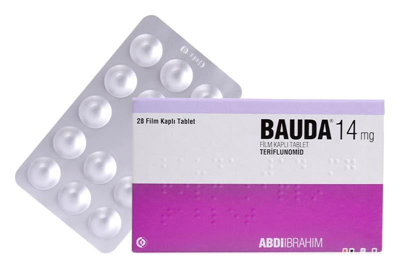

Bauda 14 mg Film Kaplı Tablet , 28 Adet

Ne için kullanılır
KT · Bölüm 1BAUDA, soluk mavi renkli, yuvarlak, bikonveks, her iki tarafı düz film kaplı tabletlerdir. 28 film kaplı tabletlik alüminyum folyo blister ambalajlarda mevcuttur. BAUDA, immünomodülatör bir ajan olan ve bağışıklık sisteminin sinir sistemine olan saldırısını sınırlayan teriflunomid etkin maddesini içermektedir.
BAUDA, yetişkinlerde, –Vücut ağırlığı >40 kg olan çocuklarda ve adölesanlarda (10 yaş ve üzeri) atak ve iyileşmelerle giden MS (multipl skleroz) tedavisinde kullanılır. Bu ilacı kullanmaya başlamadan önce bu KULLANMA TALİMATINI dikkatlice okuyunuz, çünkü sizin için önemli bilgiler içermektedir.
• Bu kullanma talimatını saklayınız. Daha sonra tekrar okumaya ihtiyaç duyabilirsiniz. • Eğer ilave sorularınız olursa, lütfen doktorunuza veya eczacınıza danışınız. • Bu ilaç kişisel olarak size reçete edilmiştir, başkalarına vermeyiniz. • Bu ilacın kullanımı sırasında, doktora veya hastaneye gittiğinizde doktorunuza bu ilacı kullandığınızı söyleyiniz. • Bu talimatta yazılanlara aynen uyunuz. İlaç hakkında size önerilen dozun dışında yüksek veya düşük doz kullanmayınız.
Multipl skleroz nedir? MS, merkezi sinir sistemini (MSS) etkileyen uzun süreli bir hastalıktır. MSS, beyin ve omurilikten oluşur. Multipl sklerozda, enflamasyon (iltihap) MSS'te sinirlerin etrafında bulunan koruyucu kılıfı (miyelin adı verilen) yok eder. Bu miyelin kaybına miyelinsizleşme denmektedir. Bu durum, sinirlerin düzgün çalışmasını engeller.
Tekrarlayan multipl sklerozu olan insanlar, sinirlerinin düzgün şekilde çalışmamasından kaynaklanan ve tekrar eden fiziksel semptom atakları (relapslar) geçireceklerdir. Bu semptomlar hastadan hastaya farklılık göstermekle birlikte şunları kapsamaktadır: • yürümede zorluk • görme problemleri • denge problemleri
Tekrarlama (relaps) bittikten sonra bazı semptomlar tamamen kaybolabilir, ancak zamanla relapslar arasında bazı problemler kalabilir. Bu, günlük aktivitelerinizi sekteye uğratabilecek bazı fiziksel sakatlıklara neden olabilir.
BAUDA, bazı beyaz kan hücrelerinin (lenfositler) artışını sınırlayarak bağışıklık sisteminin merkezi sinir sistemi üzerine yaptığı ataklara karşı korunmasına yardımcı olur. Bu, MS'teki sinir hasarına yol açan enflamasyonu sınırlar.